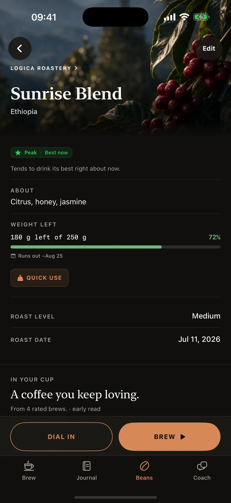
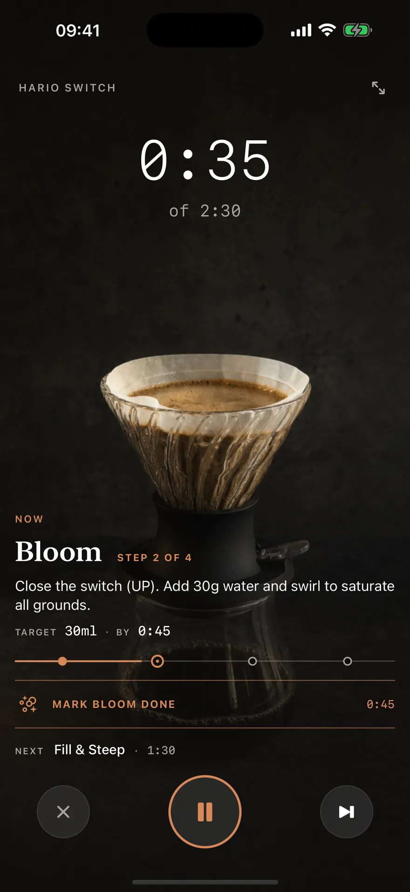
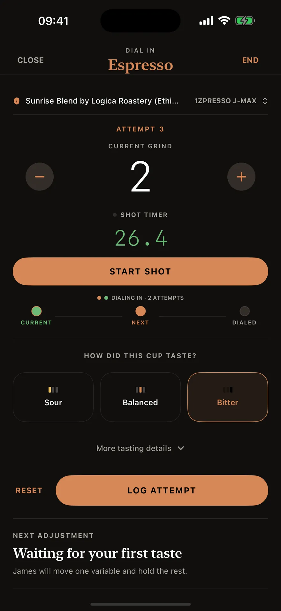
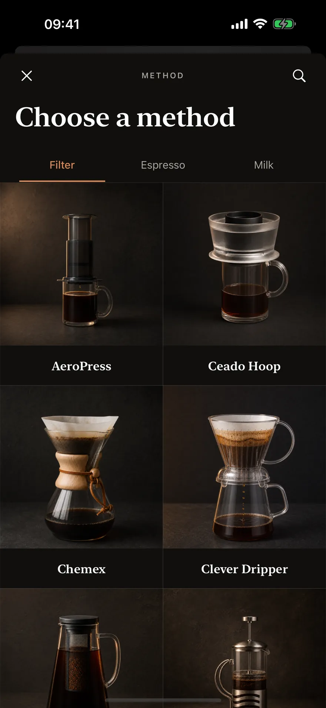
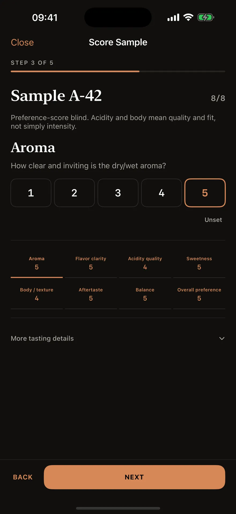
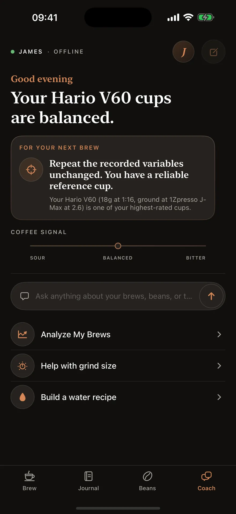
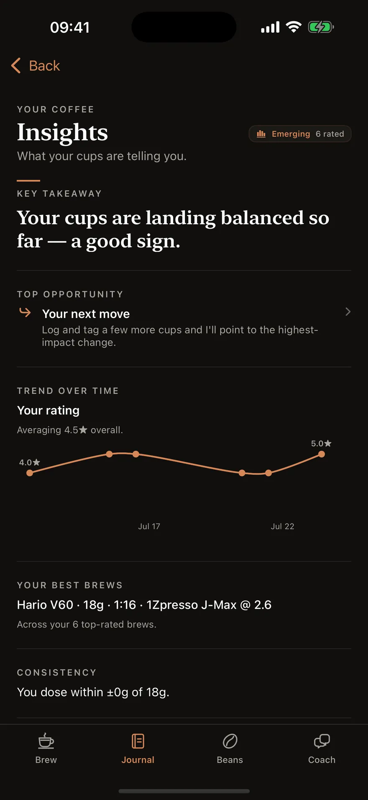
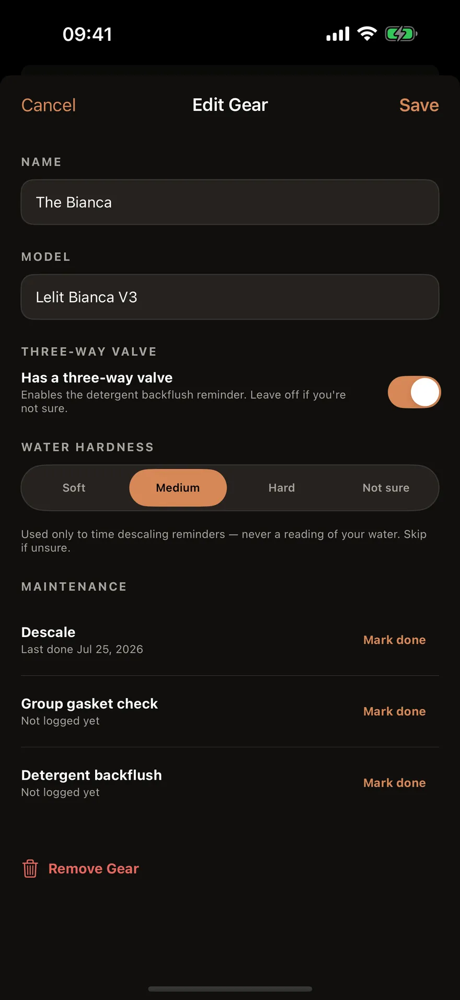
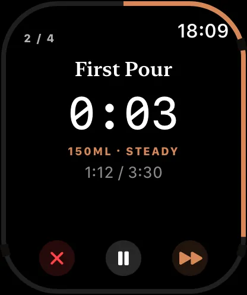

This page isn’t in your language yet — showing English.
Every cup is telling you something.
A brewing companion that listens, remembers, and answers back — offline, on your device.
Most of us never write it down.
We brew, we drink, we forget — and tomorrow we guess again.
It remembers, so you don't have to.
Dose, grind, water and its temperature, time, the grinder and the setting you used, what the cup cost, and what it actually tasted like. Scan the bag and the basics fill themselves in. One tap at the end of a brew logs the setup; taste tags take one more.

180 g left of 250 g
What comes in the box
Recipes worth following.
The credited ones follow published methods from twenty named authorities — Hoffmann, Rao, Kasuya, Hedrick, Adler, Wendelboe, Winton and Howell among them.
A staged timeline, not a stopwatch.
Every stage carries the water to reach and the moment to reach it by, and names what is coming next before it arrives. On a Switch it even tells you when to close the valve.

target 30 ml by 0:45
Then it names the one thing to change.
One click finer. Half a degree cooler. One variable at a time, holding everything else exactly where it is — the whole discipline of dialling in, and of this app. Twenty-three grinders carry their real detents, so that click is one your dial actually has.

and hold the rest”
Whatever you brew on.
Filter, espresso and milk drinks. And when you want a recipe of your own on any of them, build it stage by stage and send it as a link or a QR code — their app will even translate your grind setting onto their grinder.

Taste them blind.
Line up two to six coffees and score each one blind — eight marks, from aroma to overall preference — then reveal which was which and see what you actually chose. Cupping sessions live in the same private record as everything else.

8 of 8 marks
Pin your best cup. Brew toward it.
Mark a Reference Cup and every later brew is measured against it. Logica explains what drifted, you plan one small correction, and it's waiting for you at setup next time — then quietly disappears once you've already made it. It won't call a shot balanced on flavour words alone, or send you chasing grind on beans that are simply too fresh — it'll tell you to let them rest.

James · offline
Your journal, read back to you.
A rating trend, the setup your best cups keep sharing, how consistent your dose really is. Ask James to read the whole journal and he'll tell you what he sees — and your caffeine goes to Apple Health, if you want it there.

best brews · Hario V60 · 18 g · 1:16
It looks after the kit, too.
Tell it what you brew on and it keeps the upkeep on a calendar: descaling timed to your water hardness, grinder cleaning by use as well as by month, and a backflush reminder only if your machine actually has a three-way valve. Reminders, never a diagnosis.

descale · last done Jul 25, 2026
It follows you to the kettle.
The timer runs on your Lock Screen and in the Dynamic Island, and on your wrist with a haptic tap at every pour — so the phone can stay on the counter with dry hands. There's a Home Screen widget, and on iPad the brew, the journal and the coach sit side by side.

target 150 ml · steady
Private by construction
It can't phone home. There's no code in it that could.
The app contains no networking code at all. The coaching is a deterministic engine that runs offline; reading a bag label uses on-device text recognition. Your brewing record stays on your device and syncs only through your own iCloud — and you can export the whole thing as JSON whenever you like.
No account · No tracking · No Logica servers
No ads · No paywalls · No subscriptions
Start with one cup.
Free. Every feature. Tips optional.
iOS 16.2 or later · Apple Watch requires watchOS 10 · 12 languages